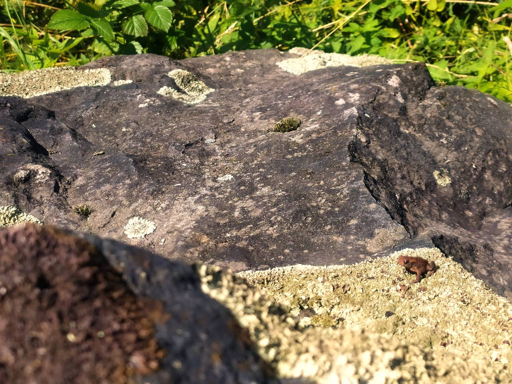
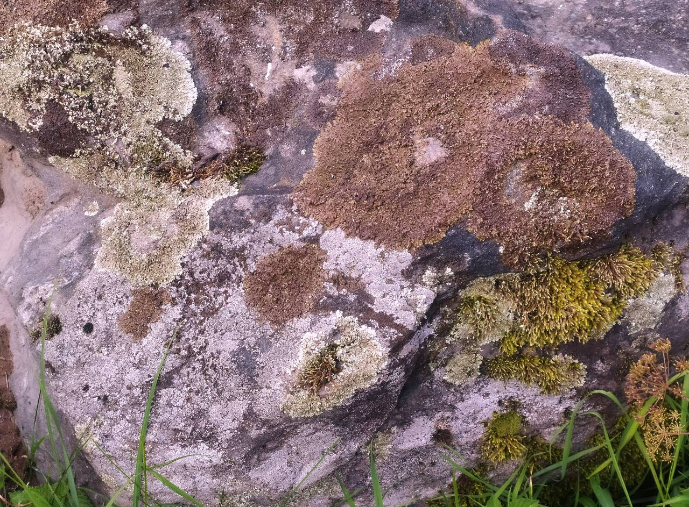

В траве у заброшенного дома, у подножия пригорка лежат два огромных валуна. "Камни и камни,"- скажете вы. А что, если этот единственный найденный в Восточной Европе идол бога ветров Вееса, расколотый главным языческим богом Перуном на две части? Интересно? Тогда вам сюда!
О том, что огромные черные валуны — это две части одного языческого идола, говорит и известный литовский балтовед и историк Викинтас Вайчкавичюс. Раньше идол стоял на капище на возвышенности, а сейчас лежит расколотый недалеко от дороги.
Геологи подтвердили, что когда-то камень был цельным и достигал трех метров в высоту. Камень имеет очень плотную структуру, чёрный цвет.
Сведения о богах ветров остались в преданиях различных народов, но идол был найден только у нас в Беларуси местным краеведом из Лынтуп Алесем Гарбулем. Само урочище, где лежит камень, называется Вайшский Лог. Название имеет санскритские корни и в переводе означает "низина бога ветров".
Существует 3 версии, почему раскололся камень.
По одной, его разбили христиане во время христианизации этих земель.

По второй, языческой версии, он раскололся в результате противостояния бога грома и молнии - Перуна и бога ветров-Вееса. Веес оказался слабее, Перун расколол его на 2 части.
По третьей, современной версии, из-за плотности состава камня в него часто ударяло молниями, и один из ударов стал роковым...
Камни живописны и необычны. Заходите почтить останки древнего бога!
Записала Даша Терро